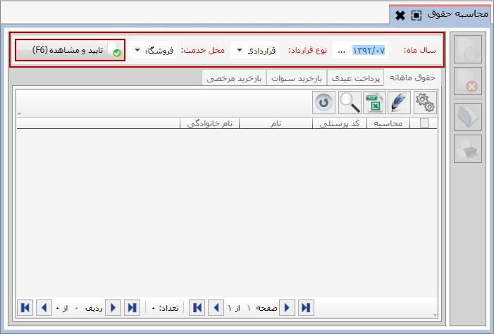

پس از ثبت لیست کارکردهای ماهانه، می توانید حقوق هر یک از کارمندان را محاسبه نمایید. برای دسترسی به این قسمت، از بخش «عملیات روزانه» و منوی «محاسبه حقوق» اقدام نمایید. در ابتدا صفحه محاسبه حقوق به شکل زیر به نمایش درمی آید:
در این صفحه نیز ابتدا باید در بالای صفحه فیلدهای سال ماه، نوع قرارداد و محل خدمت را تعیین و تایید نمایید، آنگاه در جدول پایین صفحه در تب «حقوق ماهانه» لیست کارمندان را مشاهده خواهید کرد:

برای محاسبه حقوق هر یک از کارمندان، گزینه مربوط به کارمند مورد نظر را تیک بزنید و روی گزینه
 (Ctrl+U) کلیک کنید، در این صورت واژه خیر در فیلد محاسبه تبدیل به واژه بله خواهد شد.
(Ctrl+U) کلیک کنید، در این صورت واژه خیر در فیلد محاسبه تبدیل به واژه بله خواهد شد.
 می توانید کلیه ردیف های جدول را به صورت یکجا تیک بزنید و گزینه محاسبه را یک بار برای همه آن ها کلیک کنید تا حقوق همه کارمندان به صورت همزمان محاسبه شود.
می توانید کلیه ردیف های جدول را به صورت یکجا تیک بزنید و گزینه محاسبه را یک بار برای همه آن ها کلیک کنید تا حقوق همه کارمندان به صورت همزمان محاسبه شود.
کاربرد گزینه های سمت راست صفحه به شرح زیر است:
محاسبه (Ctrl+U): با انتخاب یک یا چند ردیف از جدول شکل بالا و کلیک روی این گزینه، می توانید حقوق کارمندان را به صورت تکی یا یکجا محاسبه نمایید.
حذف (F9): با استفاده از این گزینه می توانید محاسبات حقوق هر یک از کارمندان را حذف کنید، در این صورت پس از حذف، در فیلد محاسبه واژه بله به خیر تبدیل خواهد شد.
 باز کردن (Enter):
پس از محاسبه حقوق می توانید با کلیک روی این گزینه، فیش حقوقی کارمند انتخاب شده را مشاهده نمایید.
باز کردن (Enter):
پس از محاسبه حقوق می توانید با کلیک روی این گزینه، فیش حقوقی کارمند انتخاب شده را مشاهده نمایید.
 چاپ (Ctrl+P):
پس از محاسبه حقوق هر یک از پرسنل، با استفاده از گزینه چاپ، می توانید فیش حقوقی هر یک از آن ها را چاپ نمایید.
چاپ (Ctrl+P):
پس از محاسبه حقوق هر یک از پرسنل، با استفاده از گزینه چاپ، می توانید فیش حقوقی هر یک از آن ها را چاپ نمایید.